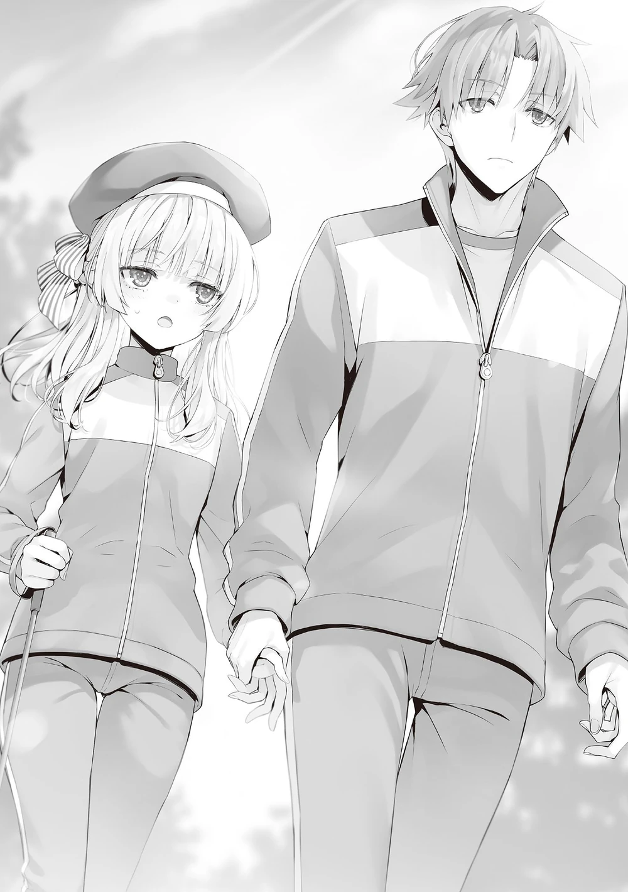

Rövanş maçı özel antrenmandan hemen sonra olduğu için, birkaç ısınma hareketinin ardından antrenmanı bitirdik.
“Elimizden geleni yaptık. Şimdiyse asıl maçta neler yapabileceğinizi görelim.”
Soluklanırlarken fazla zaman kaybetmeden ikisini de çağırdım.
“Evet, teşekkürler. Sayende kazanma şansımız arttı.”
Başını kibarca eğen Horikita, Ibuki’yi de bana teşekkür etmesi için dürttü.
O ise karşılık vermeye hiç niyetinin olmadığını göstererek arkasını döndü ve somurttu.
“Sana teşekkür falan etmeyeceğim. Benim teşekkür etme yöntemim bir gün seni tekmelemek olacak.”
“Eğer minnettarlık anlayışın buysa, sanırım pas geçeceğim.”
“Harbiden mi?”
“Pekala, ben önden gidiyorum, siz elinizden gelenin en iyisini yapın.”
“Ne? Dayak yemelerini izlemeyecek misin Ayanokōji-kun? Ben de birlikte izleyeceğimizi düşünmüştüm.”
Bir süredir uzaktan izleyen Kushida, tüm maçı beraber izleyeceğimizi sanmıştı.
“Eğer benim bu işe karıştığım ortaya çıkarsa, bu sadece Horikita ve Ibuki’nin zararına olur.”
Eğer Amasawa’yı şüphelendirseydim, ani bir saldırı işe yaramazdı.
Kazanma ihtimallerini yüzde bir bile olsa arttırabilmek için, burada bulunmamak en iyisiydi.
“Anlıyorum. O halde hepsini izleyeceğimden emin olacağım. Hatta telefonumu bile getirdim.”
Eğer utanç verici bir şeyler yaparlarsa bunları fotoğraflamak için şahane bir fırsat olacağını düşünmüştü.
Kushida kendisinin maçı izleyecek kişi olacağını belirttiğinden bu görevi ona bırakmaya karar verdim.
Ayrıca, bu sabah yapmam gereken bir iş daha vardı.
Saat 7’den hemen önce, doğal olarak, parkı kullanan çok az öğrenci vardı.
Bu yüzden çağırdığım kişi tek başına bankta oturmuş beni bekliyordu.
“Hava soğuk, değil mi? Sözleştiğimiz zamandan daha erken gelmene gerek yoktu.”
“Endişelenme. Ne de olsa beni sık sık buluşmaya çağırmıyorsun Ayanokōji-kun. Beklemek keyifliydi.”
“Yanına oturabilir miyim?”
“Bu yüzden orayı boş bıraktım ya.”
Sakayanagi, her zamanki haliyle gülümsedi.
“Doğrudan konuya gireceğim. Şu anda Yamamura’ya yakındaki köpek parkında beklemesini söyledim.”
“Ne? Köpek parkı mı? Yamamura-san mı? Ne demek istiyorsun?”
“Yamamura’nın isminin geçmesini beklemiyor muydun?”
“Seninle aynı oryantasyon toplantısı grubundaydı değil mi? Sıkıntılı bir şey mi yaptı yoksa?”
Sakayanagi bilmediğini imâ ederek bir bahane uydurdu.
“Yamamura ve benim aynı grupta olduğumuzun farkındaydın.”
“Aslında benim için de sürpriz oldu. Doğal olarak sınıftakilerin her birinin daha otobüsteyken hangi gruba atandığını öğrendim. Bu sefer sadece gözlemliyordum, o yüzden oryantasyon toplantısının oyunlarına müdahale etmedim.”
Sakayanagi’nin tüm sınıf arkadaşlarının nereye atandığını bildiğini tabii ki de fark etmiştim.
O yüzden ona söylemek istediğim şeyi söylediğimde Sakayanagi’nin arkasına saklanabileceği bir bahanesi olmayacaktı.
“Kampın ikinci gününde lobide konuşurken bana ne dediğini hatırlıyor musun? ‘Hashimoto-kun ve Morishita-san aynı grupta, Hashimoto-kun’dan haber var mı?’ Böyle demiştin. A sınıfının grup atamalarını göz ardı etmiş olman imkansız, çünkü bundan gururla bahsediyordun. Yine de Yamamura’nın adını hiç anmadın öyle değil mi?”
Böylelikle Sakayanagi’nin bilinçaltında Yamamura’dan bahsetmekten kaçındığı ortaya çıktı.
“Şey…”
Nasıl bir bahane uydurursa uydursun, ondan kaçındığı sonucunu çarpıtamazdı.
“…Evet, bu doğru. O anda Yamamura’nın adından bahsetmediğimi kabul ediyorum. Ama bu seni hiç alakadar etmez, değil mi Ayanokōji-kun?”
“Haklısın, beni alakadar etmez. Bunu anlatarak başkalarının işine burnumu sokuyorum muhtemelen.”
Yine de devam ettim. Sakayanagi her şeyi biliyordu, o yüzden lafı uzatmadım.
“Kamuro’yu kaybettin. Onun duygularının yükü de senin üstüne kaldı. Ama bu artık her şeyin normalleştiği anlamına gelmez. Daha yanında kimi tutmak istediğine bile karar veremedin değil mi?”
Yanımda duran Sakayanagi’nin dudaklarının arasından beyaz bir buhar çıktı.
“Doğru, henüz karar vermedim, fakat sence Yamamura-san’ı mı seçmeliyim?”
“Bunu kastetmedim. Herkesin kendine has güçlü ve zayıf yanları vardır.”
Yamamura’nın gözüpek bir şekilde Sakayanagi’yi savunacağını hayal etmek zordu.
“Hayatta kalma ve eleme özel sınavları… Hâlâ o sınavda takılı kalmış insanlar var.”
“…Ben ve Yamamura-san’dan mı bahsediyorsun?”
“Aynen öyle. Yamamura acı çekiyor ve ilerleyemiyor, her ne kadar onun durumu seninkinden epey farklı olsa da.”
Hâlâ hayatta kalma ve eleme sınavını kafalarında bitirememiş ikili.
Eğer Sakayanagi A sınıfının ışığıysa, Yamamura da gölgesiydi.
Şunu rahatlıkla söyleyebiliriz ki bu ikisinin ayrılmaz, koparılmaz bir ilişkileri vardı.
“Eğer ikilemler hâlâ aklını kurcalıyorsa bu durumla başa çıkman lazım.”
“…Bu söylediğin garip, Ayanokōji-kun.”
“Garip derken?”
“Bundan sonra sadece kenarda kalacağını sanıyordum. Bu gereksiz müdahalen biraz aşırı değil mi?”
“Doğru. Ben de az bir zaman öncesine kadar sadece kenarlarda takılmam gerektiğini düşünüyordum.”
Sakayanagi’nin daha fazla yardıma ihtiyacı yoktu.
Bu kadarı, onun kendi başına ayağa kalkmasını ummak için yeterliydi.
Buna rağmen vaziyet, Hashimoto’nun onlara ihanet ettiği sınavdan beri önemli ölçüde değişmişti.
Tam da bu yüzden yapılmasını gerekli gördüğüm şeyi yapmaktaydım.
“Sana illâ Yamamura ile bir alakan olsun demiyorum. Buna dair herhangi bir ümidim de yok. Onunla daha yakın olman ya da mesafeli davranman veya tamamen bağları koparman sana kalmış. Ama onunla konuşmayı düşünüyorsan, var olan tek fırsatın bu.”
Meseleyi ertelemenin iki tarafa da yararı yoktu.
“En akıllıca davranış hazır eğitim kampındayken her şeyi ardında bırakmak olmaz mıydı?”
“…Ama…”
Sakayanagi ve bırakamadığı keçi inadı…
Bunu diyen ben olsam da, Sakayanagi de en az benim kadar arkadaşlık ilişkileri konusunda berbattı.
Ne yapacağını bilmiyordu çünkü geçmişte yaşadığı benzer bir deneyimi yoktu.
“Demin de dediğim gibi, Yamamura’ya köpek parkında beklemesini söyledim. Bu soğukta 20 dakikadan fazla bir süredir seni bekliyor.”
“Eğer durum buysa, ona kabalık etmiş olmuyor musun Ayanokōji-kun? Bana söz verdiğin buluşma saati 7’ydi. Biz konuşalı 10 dakika bile olmadı henüz. Bu onun daha erkenden beklemeye başladığı anlamına gelmiyor mu?”
Yamamura’nın penceresinden bakınca, gereksiz şekilde uzun süre beklemek zor olmuştur.
Sakayanagi’nin penceresinden bakarsak da, Yamamura’yı daha fazla bekletmenin yaratacağı vicdan azabının ağırlığı altında ezilecekti.
“Bu da stratejimin bir parçası,” dedim.
Bu tarz imâları sezmede hızlıydı. Ne de olsa o Sakayanagi’ydi.
“Sanırım başka çare yok. Benim yüzümden soğuk kapmasına müsaade edemem. Şimdi gidip onu alalım.”
Kendi zayıflığını olduğu gibi kabul edemeyen Sakayanagi kendince haklı bir sebeple doğruldu.
Bu iş görür.
Eğer Yamamura’yla teke tek konuşursa dürüstçe derdini anlatabilirdi.
“Park buradan biraz uzakta, ama sen bile yürüyerek 5 dakikada oraya varabilirsin. Önden buyur.”
Ayağa kalktım.
Buna rağmen, Sakayanagi adım atmadı.
“Sorun ne?”
Sorum cevapsız kaldı ve kısa bir sessizlik yaşandı.
Bu sırada Sakayanagi yürümeye başlıyor gibi yaptı ama ileri doğru bir adım bile gitmedi.
“…Bacağım…”
Bacağı mı? Acaba acıyor muydun? Bir anlığına düşündüm, ama…
“Bacağım… Bacağımı oynatamıyorum… Bana n'oldu acaba.”
Derhal açığa çıktı ki bu sorun fiziksel değil, zihinseldi.
Her ne kadar cesurca sözlerle ayaklanmış olsa da, her zaman olduğu gibi, vücudu onunla aynı fikirdeymiş gibi durmuyordu.
Onun kalbinde Kamuro’nun sebep olduğu değişim burada da açıkça görülüyordu.
“Bu yönünü başkasına göstermek hoşuna gitmiyor mu?”
“…Evet, tam olarak bu…”
Sakayanagi yürüyemez ve şaşkına dönmüş halde beklerken sol elini tuttum. Beni buluşma saatinden önce beklemeye başladığı için parmak uçları epey üşümüştü.
“O zaman, şu ana mahsus olarak ben senin ayakların olacağım. Daha kolay yürürsün.”
“…Kusura bakma.”
“Sorun yok. Bu işi ilk başlatan bendim.”
Ardından tek kelime etmeden yavaşça ilerledik.

Nihayet köpek parkı görüş alanımıza girdi.
Yamamura’yı uzaktaki büyük ağacın gölgesinde dikilirken gören Sakayanagi, kafası karışık olsa da varlığını belli etmek için yavaşça elini kaldırdı.
Sakayanagi’yi nazikçe arkasından ittim ve baston yardımıyla da olsa kendi kendine yürümeye başladı.
Bu noktadan sonrasına karışmak benim görevim değildi.
Sakayanagi ve Yamamura konuşmalı ve kendileri karar vermeliydi.
Parlak bir geleceğin beklentisiyle arkamı dönüp oradan ayrıldım.
Böylelikle, üç gece dört gün süren oryantasyon toplantısı sona ermiş oldu.